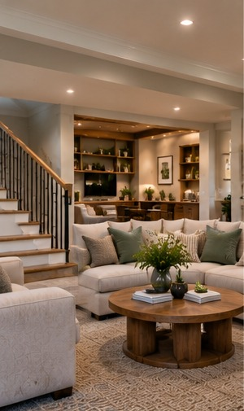

Interiors / Renovation Journal
Designing a More Comfortable Basement
Start with moisture, headroom, insulation, and egress before planning finishes.
Retrospective topic: September 2024 · Oakwaters Journal

Basements offer valuable living space, but below-grade conditions require different decisions than upstairs rooms.
Investigate moisture before finishing
Check for water entry, condensation, drainage issues and signs of past flooding. Finishes should follow a plan for moisture control rather than conceal existing problems.
Improve light and usable headroom
Coordinate ductwork, insulation, lighting and ceiling heights early. Bedroom or living-space conversions may require specific egress and code provisions.
Planning a renovation?
Explore what is possible for your home with Oakwaters Construction.
Discuss Your Project →